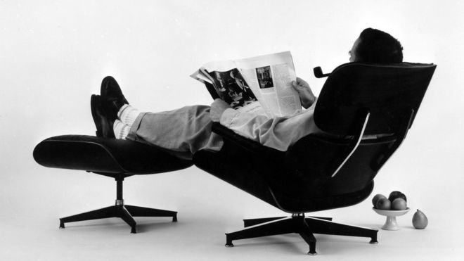
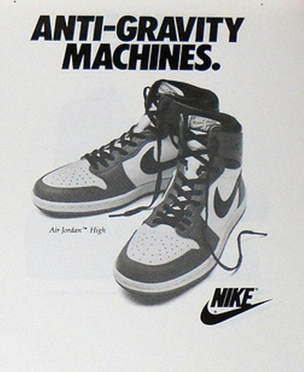

EAMES LOUNGE CHAIR AND OTTOMAN - 1956
Designed by Charles and Ray Eames for Herman Miller, this classic design made of folded plywood and leather is highly sought after and replicated. Being one of the most famous mid-century modern furnishing pieces, it is inspired by "the warm receptive look of a well-used first baseman's mitt (Charles Eames). Providing a "special refuge from the strains of modern living", the lounge chair and ottoman were conceived to provide welcoming comfort to the body with style.
Designed by Charles and Ray Eames for Herman Miller, this classic design made of folded plywood and leather is highly sought after and replicated. Being one of the most famous mid-century modern furnishing pieces, it is inspired by "the warm receptive look of a well-used first baseman's mitt (Charles Eames). Providing a "special refuge from the strains of modern living", the lounge chair and ottoman were conceived to provide welcoming comfort to the body with style.

AIR JORDAN 1
Designed by Peter C. Moore, the AJ1 was first produced for Michael Jordan in 1984. It was released in 1985, the same year MJ became rookie of the year, then first re-released in 1994. This basketball shoe debuted with a compressed air pocket in the heel with additional ankle support and an overlay on the toe, boasting many previous basketball sneakers. Although the shoe now is considered to have one of the greatest legacies in basketball sneaker history and and resold for high prices, when first retroed, the AJ1 hit clearance sales and were sold on sales racks for as low as $19.99. Representing the wearer with a certain edginess associated with outlaw activities, this set the bar high for what was to follow in terms of design.
Designed by Peter C. Moore, the AJ1 was first produced for Michael Jordan in 1984. It was released in 1985, the same year MJ became rookie of the year, then first re-released in 1994. This basketball shoe debuted with a compressed air pocket in the heel with additional ankle support and an overlay on the toe, boasting many previous basketball sneakers. Although the shoe now is considered to have one of the greatest legacies in basketball sneaker history and and resold for high prices, when first retroed, the AJ1 hit clearance sales and were sold on sales racks for as low as $19.99. Representing the wearer with a certain edginess associated with outlaw activities, this set the bar high for what was to follow in terms of design.